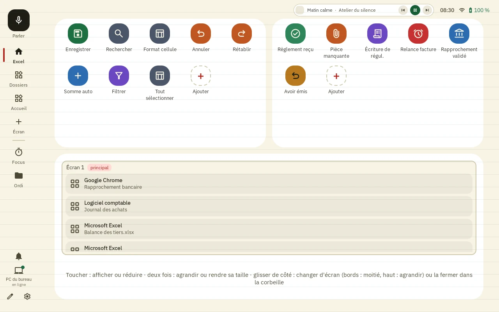
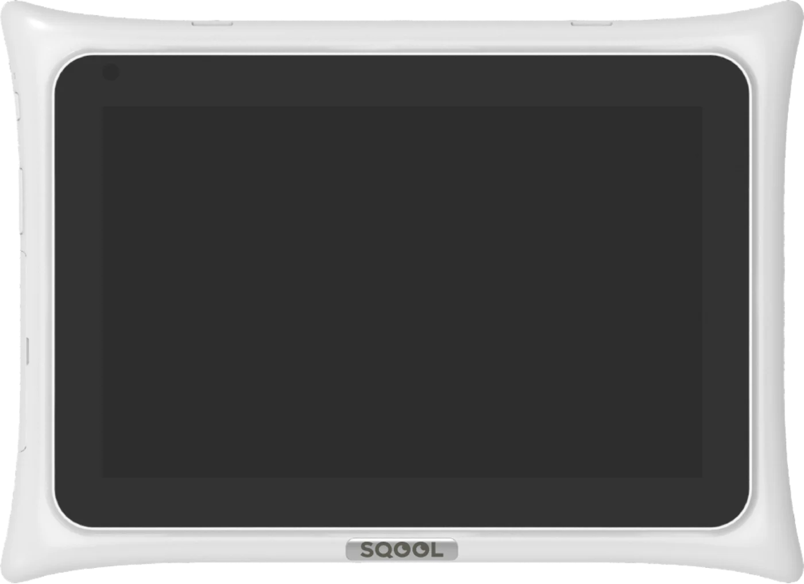
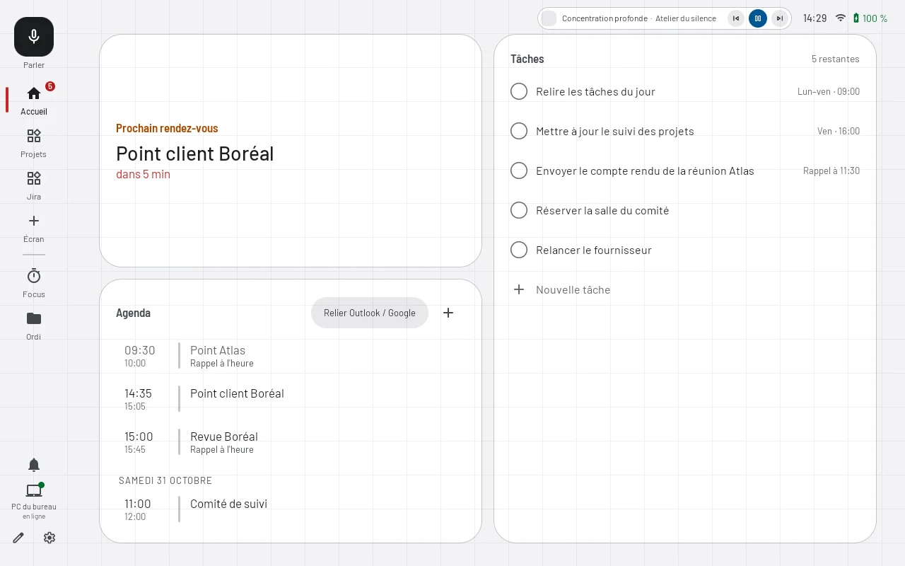
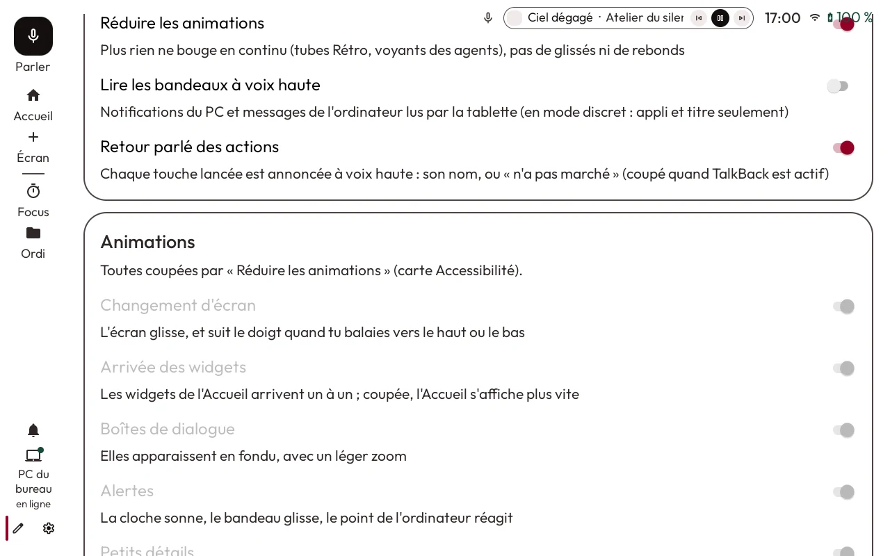
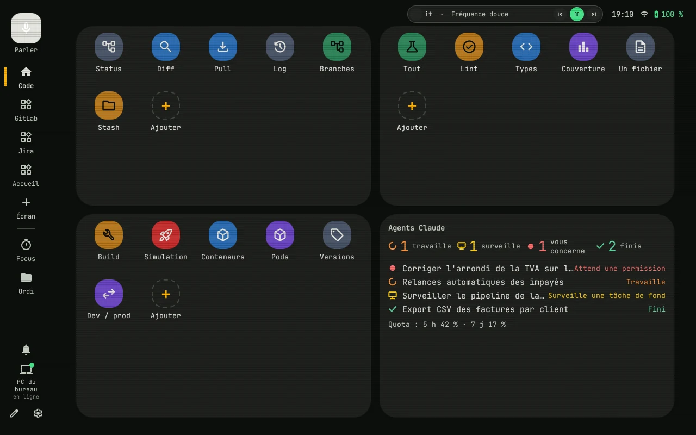

Raccourcis et macros
Une touche ouvre une appli, envoie un raccourci clavier ou tape un texte que vous saisissez dix fois par jour. Plusieurs étapes à la suite font une macro. Chacun crée ses touches sur l'écran lui-même.

UnoMate est un écran tactile de 10,1 pouces posé à côté du Mac ou du PC. Applis, raccourcis, réunions et fenêtres se commandent d'un toucher, en WiFi.
Équiper vos postes Télécharger le logiciel



Clôture du mois. Les étapes à cocher et le compte à rebours de l'échéance restent affichés à côté du tableur.
Présentation. Diapo suivante, chrono et micro sous la main : vous gardez les yeux sur le public.
Pause. « Je m'absente » coupe le micro, met le minuteur en pause et garde vos fenêtres. « Reprendre » remet tout en place.
Réunion. Cinq minutes avant, l'écran entier vous prévient, avec un compte à rebours.
Grandes touches. Fort contraste, texte agrandi et touches annoncées à voix haute, pour les postes aménagés.
Déploiements. Les revues de code GitLab en attente et l'état du dernier déploiement de chaque projet.
Une touche ouvre une appli, envoie un raccourci clavier ou tape un texte que vous saisissez dix fois par jour. Plusieurs étapes à la suite font une macro. Chacun crée ses touches sur l'écran lui-même.

L'agenda Outlook ou Google s'affiche sur l'écran. Un toucher rejoint la réunion Teams, Meet, Zoom ou Webex, puis coupe le micro, la caméra ou raccroche.

Un minuteur de concentration avec une ambiance sonore active Ne pas déranger sur l'ordinateur. Pour une pause, « Je m'absente » coupe le micro et garde vos fenêtres pour la reprise.
Contraste élevé, texte agrandi jusqu'à une fois et demie, grandes touches et lecteur d'écran. Chaque action peut être annoncée à voix haute, et la voix lance une touche par son nom.

Revues de code GitLab, déploiements et tickets Jira sous les yeux, avec des touches pour Git, les tests et la mise en production. La configuration s'écrit aussi en fichiers, sur Mac comme sur Windows.

UnoMate fonctionne sur la tablette Unowhy 4.2, avec son pied intégré. Le logiciel donne une seconde vie à du matériel existant au lieu d'en fabriquer du neuf.
IP52, IK06 : indices de la fiche produit de la tablette Unowhy 4.2.
UnoMate est vendu par les équipes commerciales d'Unowhy, seul ou avec un PC Unowhy. Il s'ajoute aux ordinateurs déjà en place, Mac ou Windows, sans changer vos outils.
Sécurité. L'écran et l'ordinateur échangent directement sur votre WiFi, en HTTPS, après un code d'appairage. Aucun compte à créer, aucune IA.
Déploiement. Sur l'ordinateur, un seul fichier à lancer, sans installateur. L'écran est verrouillé sur UnoMate et se met à jour seul.
Postes aménagés. Grandes commandes, lecture à voix haute et contraste réglable : une solution à étudier avec votre référent handicap.
Prise en main. Des modèles d'écrans prêts à l'emploi, Bureau, Deck, Réunion et Veille, que chacun ajuste ensuite.
Les équipes Unowhy
Sur le Mac ou le PC à piloter. Il peut se lancer seul à chaque ouverture de session.
Posez-le sur le bureau, sur le même WiFi. Il trouve l'ordinateur tout seul.
L'écran affiche six chiffres, valables deux minutes. Saisissez-les sur la page qui s'ouvre sur l'ordinateur.
Le logiciel n'est pas encore signé : macOS et Windows demandent une confirmation au premier lancement. La marche à suivre est sous chaque bouton.
Le logiciel s'installe sur le Mac ou le PC à piloter, pas sur un téléphone.
Recevoir le lien par e-mailApple Silicon et Intel
Windows 10 et 11, 64 bits
Les données restent-elles dans l'entreprise ? Le pilotage, oui : l'écran et l'ordinateur échangent directement sur votre WiFi, en HTTPS, sans compte ni IA. Trois fonctions passent par un service extérieur : la commande vocale (reconnaissance vocale de Google), la météo (MET Norway, sans compte) et les mises à jour (serveur d'Unowhy).
Quels ordinateurs sont compatibles ? Les Mac, Apple Silicon ou Intel, et les PC sous Windows 10 ou 11 en 64 bits, sur le même WiFi que l'écran. L'écran est pensé pour rester branché sur le bureau.
Comment l'acheter ? Auprès des équipes commerciales d'Unowhy, seul ou avec un PC Unowhy.
Un écran peut-il servir sur plusieurs ordinateurs ? Oui. Chaque ordinateur s'appaire une fois, par exemple celui du bureau et celui de la maison. UnoMate passe seul à celui qui répond, et chacun garde son agenda, ses tâches et ses touches.
Faut-il tout paramétrer soi-même ? Non. Les modèles Bureau, Deck, Réunion et Veille se posent en un geste. Le crayon ouvre ensuite le mode Modifier : on déplace, agrandit ou retire un élément du doigt.
Quels agendas peut-on relier ? Outlook, Google Agenda ou iCloud, par le lien de partage de l'agenda (format ICS). Le lien de la réunion reste sur l'ordinateur : l'écran affiche seulement le bouton pour la rejoindre.
Que montre l'écran des fenêtres ouvertes ? Toutes les fenêtres de l'ordinateur, sur un plan de ses écrans. Un toucher en met une au premier plan, un glissé la déplace sur un autre écran.
Comment se font les mises à jour ? Celles de l'écran s'installent seules. Le logiciel de l'ordinateur se met à jour depuis l'écran, d'un toucher.
Pourquoi une confirmation au premier lancement ? Le logiciel n'est pas encore signé. macOS et Windows demandent donc une autorisation une seule fois, expliquée sous chaque bouton de téléchargement.